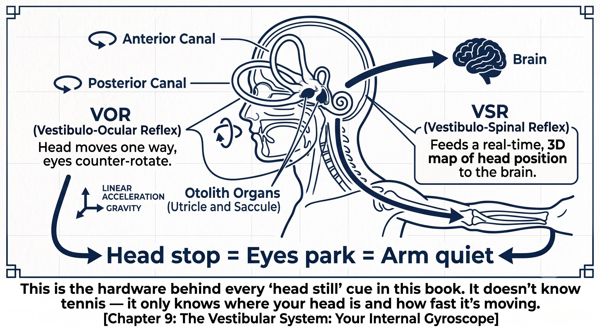
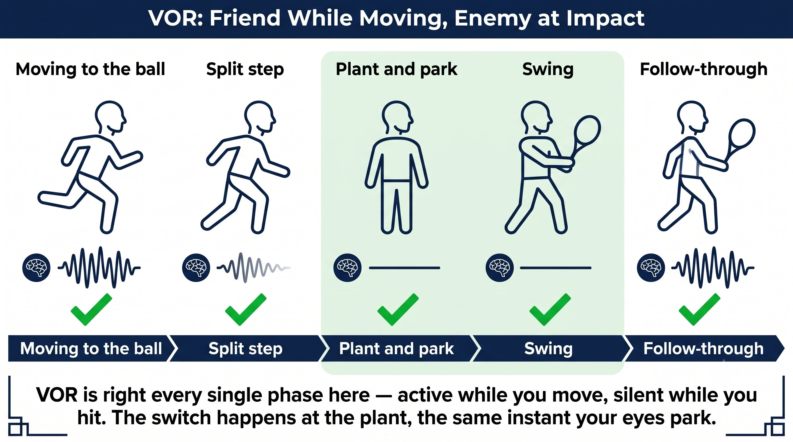
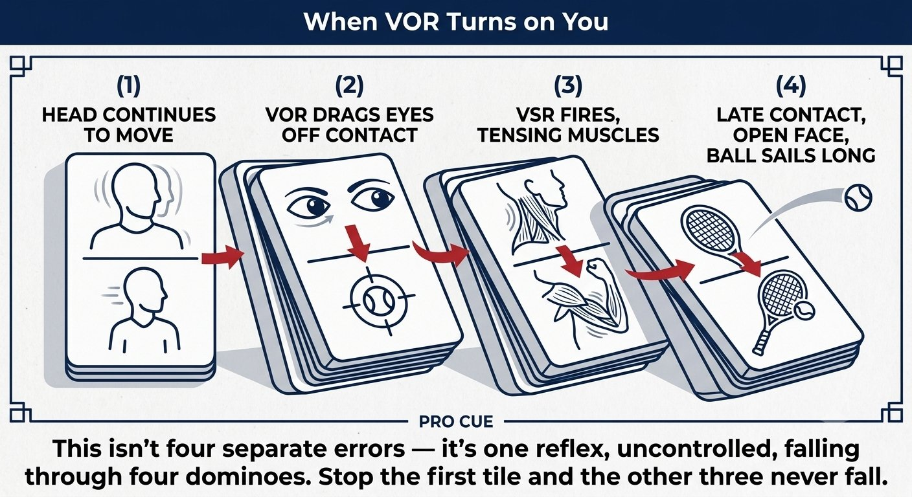
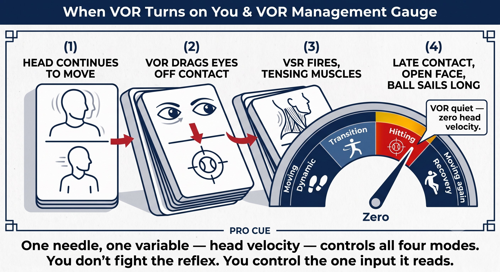
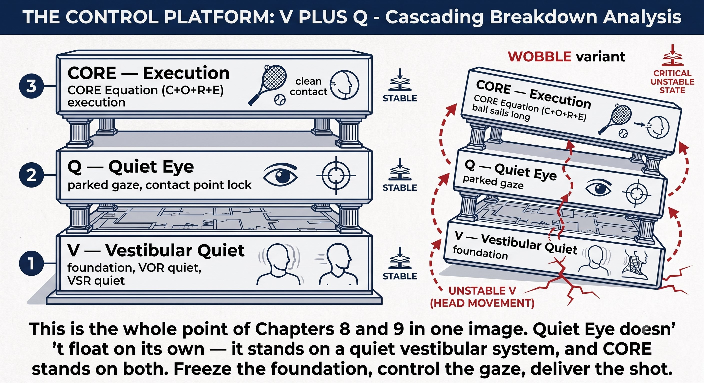

Chapter 9: Vestibular Stability and VOR Management¶
CHAPTER 9

Figure 1
VESTIBULAR STABILITY & VOR MANAGEMENT¶
The Platform That Makes Quiet Eye Possible (V)
Your inner ear is the foundation. If it fires during the swing, everything above it collapses.
The vestibular system doesn't know tennis. It knows survival. If your head moves at impact, it thinks you're falling — and it saves you by tensing everything.
— Henry Pham
The Vestibular System: Your Internal Gyroscope¶
The vestibular system, housed in your inner ear, has two jobs on a tennis court:
– Dynamic balance: keeps you upright while moving, split-stepping, and changing direction.
– Gaze stabilization (VOR): keeps your eyes locked on target while your head is moving.
It does this with three semicircular canals, which sense rotation, and two otolith organs, which sense linear acceleration and gravity. Together they give your brain a constant 3D map of exactly where your head is in space.
Figure 9.1: Three semicircular canals sense rotation. Two otolith organs sense linear acceleration and gravity. Together they feed a constant 3D head-position map to the brain. This is the hardware behind every "head still" cue in this book — it doesn't know tennis, it only knows where your head is and how fast it's moving.

Figure 2
The Principle
The vestibular system is always on. The question isn’t "is it working?" It’s "is it helping your stroke, or hurting it?"
VOR: Friend While Moving, Enemy at Impact¶
VOR, the vestibulo-ocular reflex, is the mechanism behind gaze stabilization. When your head moves, your eyes move the opposite direction at equal speed, which keeps your gaze locked on target even while your head is in motion. It's an asset every step of the way to the ball — and a liability the instant you need to hit one.
Figure 9.2: VOR is correct in all five phases — active while you move, fading while you plant, silent while you swing, active again in recovery. The switch happens at the plant, the same instant your eyes park.

Figure 3
The Principle
VOR needs to be active while you move and quiet at impact. The switch happens at the plant — the same instant you park.
When VOR Turns on You¶
If your head keeps moving through the swing, here's the chain reaction that follows:
– VOR stays active, which pulls your eyes off the contact zone and breaks Quiet Eye.
– VSR — the vestibulo-spinal reflex — fires, automatically tensing the neck, shoulders, and forearm, which blocks the stretch-shortening cycle.
– The head lifts or turns to peek at the target, VOR drags the eyes with it, and the contact point shifts behind where it should be.
– The result: late contact, an open face, a ball that sails long — off a tight arm that never got to use the stretch-shortening cycle.
Figure 9.3: Head moves → VOR drags eyes off the contact zone → VSR tenses the neck, shoulders, forearm → face opens → ball sails long. One head movement triggers the whole survival chain.

Figure 4
The Principle
Head movement at impact triggers a survival reflex that wrecks your stroke mechanics. The vestibular system thinks it's saving you from a fall. You're not falling — you're hitting a tennis ball. It doesn’t know the difference.
Managing VOR: The Three Modes¶
You can't suppress VOR directly — it's a reflex, not a choice. What you can control is head velocity, and head velocity is what tells VOR whether to fire.
Figure 9.4: You don't suppress VOR — you give it nothing to react to. Three modes, one principle: control head velocity, and VOR follows.

Figure 5
The Principle
You don’t "turn off" VOR. You stop moving your head, so VOR has nothing left to react to. The skill is head stillness — not reflex suppression.
VOR and Quiet Eye: The Partnership¶
Quiet Eye, from Chapter 8, cannot exist without a quiet vestibular system underneath it.
The Rule
Quiet Eye onset equals head stop. You cannot park your eyes while your head is still moving. The bounce is the trigger for both at once.
Training Vestibular Quiet¶
There are two distinct trainings here — one builds VOR while it's on, for dynamic balance; the other builds VOR quiet, for hitting.
For VOR On — Dynamic Balance:
– Head turns while tracking: a partner tosses side to side. Keep your eyes on the ball while actively turning your head to follow it. 20 reps.
– Split step with head level: focus on keeping head height constant while your feet are doing chaotic, quick work. No bobbing.
– Walking swings: walk forward hitting forehands. Head stays level, eyes on the contact zone. 10 steps in each direction.
– Vertical bobble drill: stand on one leg and do shadow swings. The head must not bob up or down — the vestibular system hates vertical movement more than any other kind.
For VOR Quiet — Hitting Stability:
– Gimbal head drill: balance a phone or hat on your head. Rally cooperatively. It must not fall between the bounce and the moment after contact — it can move again between shots.
– Delayed vision drill: after you hit, silently count "one" before looking up. This forces VOR to stay quiet a beat longer than feels comfortable. If you feel slightly off-balance after holding, that's the vestibular system re-engaging — completely normal.
– Chin-to-contact drill: for the one-handed backhand, the chin stays over the front shoulder through contact, then freezes for two seconds after. If the chin turns, VOR already fired.
– Chin tuck drill: tuck your chin slightly, as if holding a peach under it. This damps vestibular sensitivity on its own. Hit 20 balls and feel the added stability.
Coach's Note
The gimbal head drill is the single best vestibular-quiet drill there is. If the phone falls at contact, your head moved. If it stays put, you're vestibular quiet. Fifty rallies a week is enough to change the pattern.
The Control Platform: V Plus Q¶
Vestibular quiet and Quiet Eye aren't two separate skills — they're one platform, and CORE depends on that platform being solid before it can do its job.
The Rule
The platform — V plus Q — has to be solid before CORE executes. No platform means CORE receives a garbled signal, and a garbled signal in means a bad stroke out.
Figure 9.5: Two reflexes, one root cause. Freeze the head and both the eyes and the arm fall in line automatically — VOR stays quiet, VSR stays off. This is the platform Chapter 8 and Chapter 9 build together.
The Vestibular Checklist¶
HEAD STILL AT THE BOUNCE. CHIN TUCKED. EYES PARKED. VOR QUIET. SWING THROUGH.
– Moving to the ball: head level, VOR on, eyes tracking the ball.
– Split step: head height constant, no vertical bobble.
– Last two steps: head decelerating, eyes preparing to park.
– At the bounce: head velocity reaches zero, chin tucks, eyes jump to the contact zone.
– Through the swing: head dead still, chin tucked, eyes locked on the contact zone.
– At contact: still staring at the contact spot — the head has not moved.
– Hold: 150 milliseconds after the ball leaves the strings, head and eyes are both still.
– Release: only now does the head turn, VOR reactivate, and the eyes go find the target.
– Film check at 240fps from the side: head moving less than 2cm from bounce to contact means the vestibular system is quiet.
– If the head moves more than 5cm, VOR fired, VSR tensed the arm, and the stretch-shortening cycle got blocked — go fix head stability before anything else.
Where This Leads
This chapter establishes the V — vestibular stability and VOR management — variable in Q-V-ROOT-8-45-Impulse. Chapter 10 covers F and P, fascia and proprioception, as the biological hardware underneath everything built so far. Chapter 11 covers T, tensegrity, as the structural principle. Chapter 12 covers the stretch-shortening cycle as the engine that all of this makes possible.
←Previous ChapterChapter 8: Quiet EyeNext ChapterChapter 10: Fascia and Proprioception→